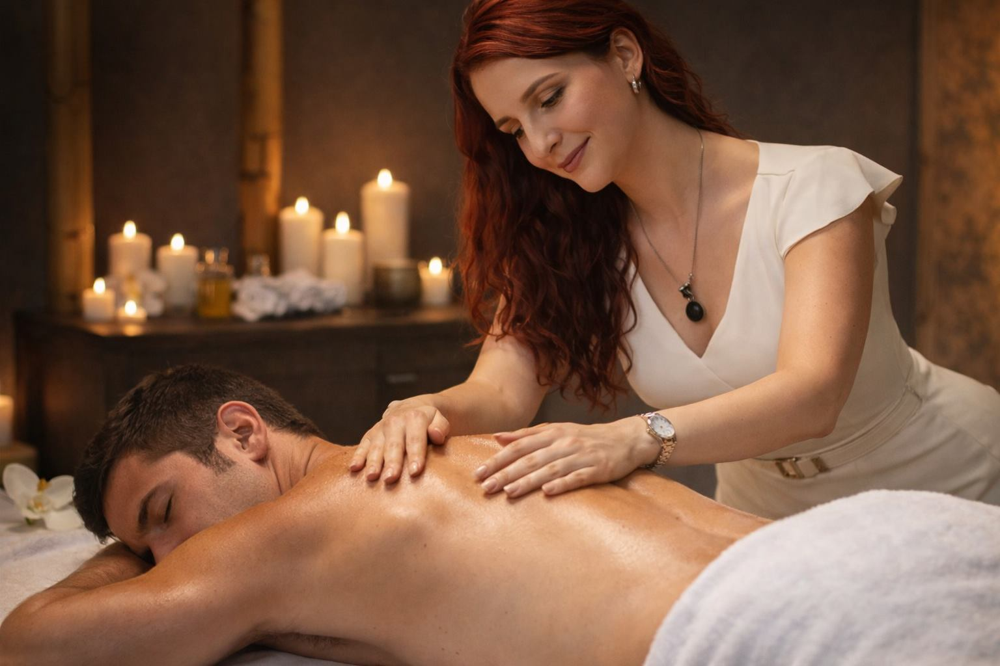

What is Tantra Massage? A Guide for Visitors to Costa Rica

Many travelers arrive in Costa Rica looking for nature, relaxation, and meaningful healing experiences. One of the most searched options today is tantra massage costa rica. This guide explains what the session includes, what to expect, and how to choose a professional provider.
What is Tantra Massage?
Tantra massage is a mindful bodywork practice that combines breath awareness, emotional presence, and therapeutic touch. In Costa Rica, tantric massage costa rica is often offered as a mobile, in-hotel service to release stress, improve body awareness, and support emotional balance.
Why Visitors Choose Tantra Healing Costa Rica
People booking tantra healing costa rica sessions often report high stress, burnout, and nervous-system overload from travel or work. A structured session can support grounding, rest, and mental clarity. For many clients, it complements yoga, meditation, and other wellness activities during their stay.
What Happens in a Session?
- Short consultation to understand goals and boundaries.
- Breathing and relaxation techniques before bodywork.
- Personalized therapeutic flow based on comfort and needs.
- Integration time and aftercare recommendations.
Some clients also ask about tantric healing therapy programs or combining sessions with a tantra retreat costa rica format for deeper transformation.
How to Choose the Right Practitioner
- Look for clear communication and consent-centered practice.
- Review the service page for professionalism and transparency.
- Read educational content to confirm expertise and approach.
- Ask if they offer complementary techniques like Karsai Nei Tsang massage or men's tantra massage when relevant.
Final Thoughts
If you are curious about tantra massage costa rica, start with one session and notice how your body responds. A quality experience in tantric massage costa rica can become a powerful part of your wellness trip, especially when paired with intentional rest and integration.